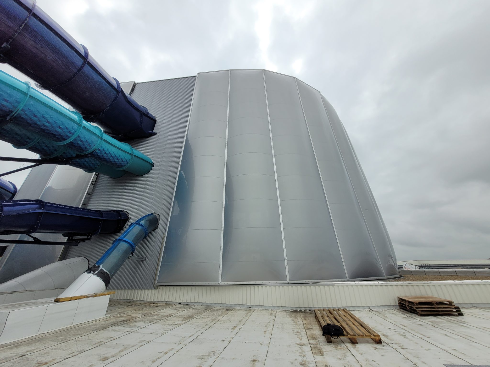
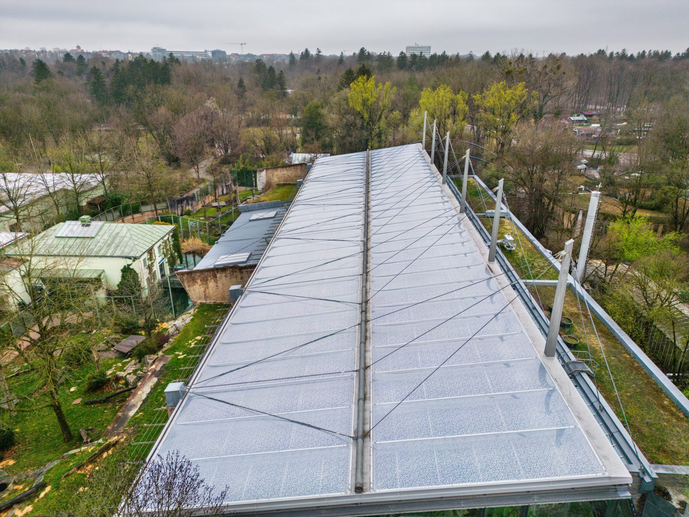

Aquascope - Poitiers
Description du projet
L'Aquascope de Poitiers est un projet fascinant qui allie fonctionnalité et esthétique pour créer un espace aquatique unique. Ce bassin couvert, conçu pour abriter une grande variété de vie marine, nécessite une structure capable de résister à l'humidité constante et aux charges importantes.
Notre bureau a conçu une toiture légère en membrane tendue qui permet de couvrir le bassin tout en laissant passer une lumière naturelle diffuse, idéale pour l'écosystème aquatique. La structure est conçue pour minimiser les ombres portées et créer un environnement optimal pour les plantes et les animaux.
Solutions techniques
La principale innovation de ce projet réside dans l'utilisation d'une membrane spécialement traitée pour résister à l'humidité constante et aux produits chimiques utilisés dans l'entretien des bassins. Le système de tension a été conçu pour maintenir la membrane parfaitement tendue malgré les variations de température et d'humidité.
De plus, la structure intègre un système de drainage innovant qui permet d'évacuer efficacement l'eau de condensation, empêchant ainsi toute accumulation d'eau sur la membrane.
Impact environnemental
L'Aquascope de Poitiers est un exemple parfait de la manière dont les structures légères peuvent contribuer à la durabilité environnementale. La toiture en membrane réduit considérablement la consommation d'énergie nécessaire pour le chauffage et l'éclairage du bassin.
De plus, les matériaux utilisés sont recyclables et la conception permet une longue durée de vie avec un entretien minimal, ce qui en fait une solution économique et écologique.


